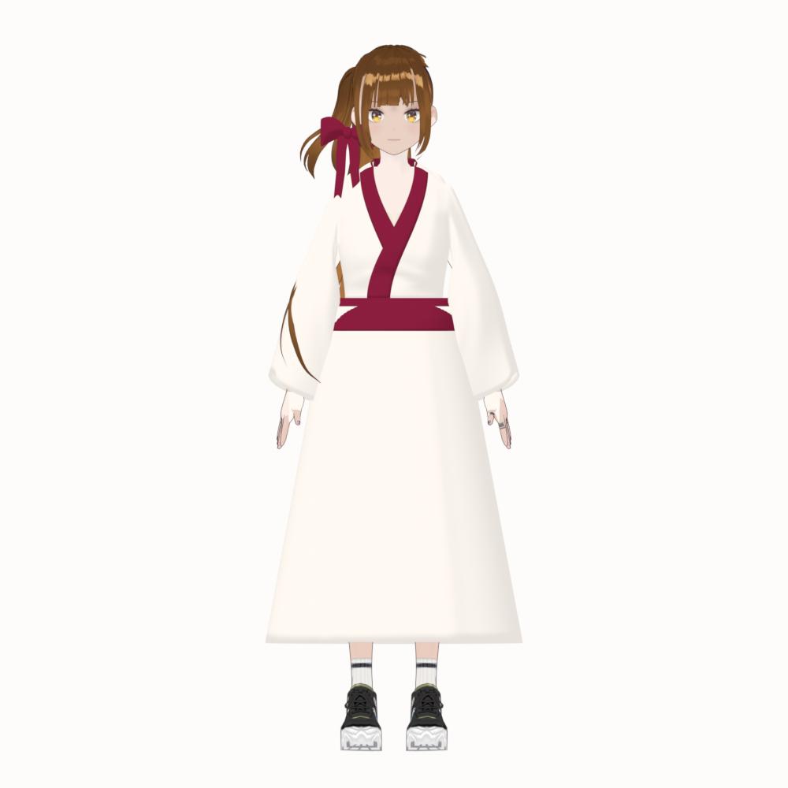
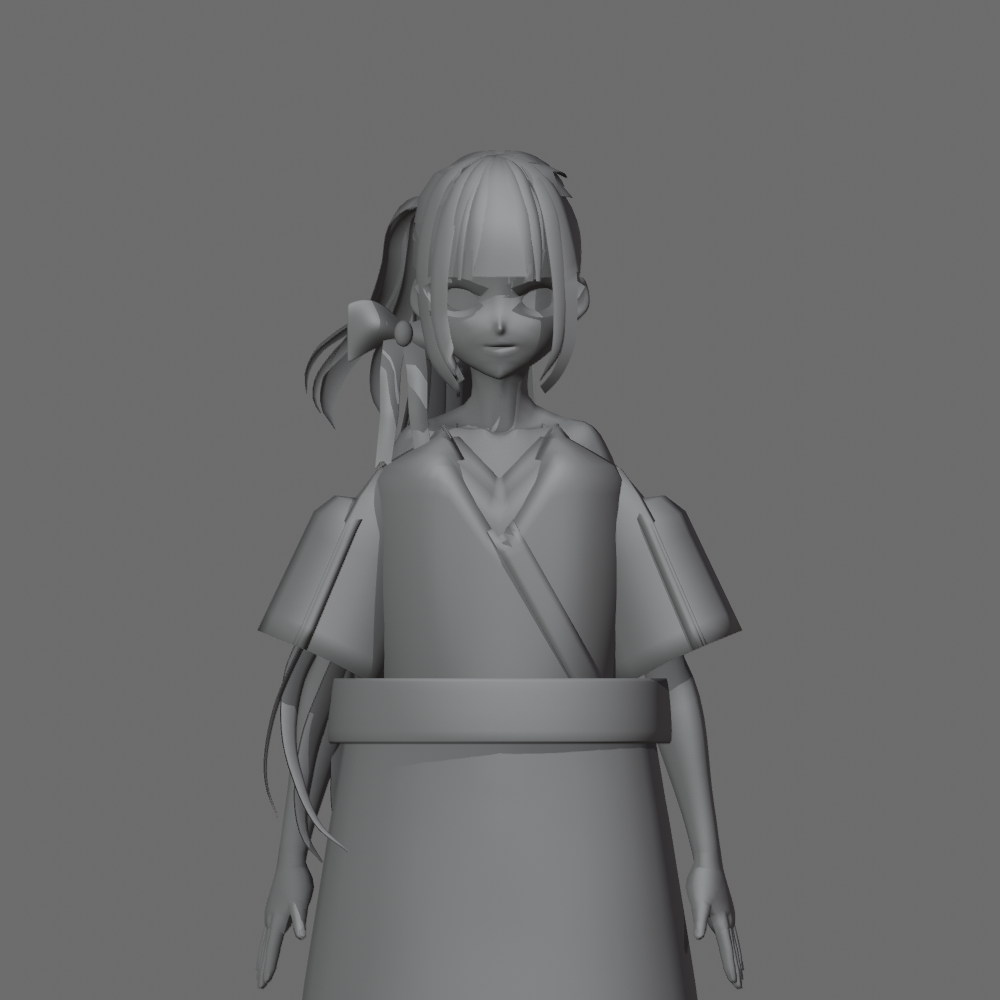
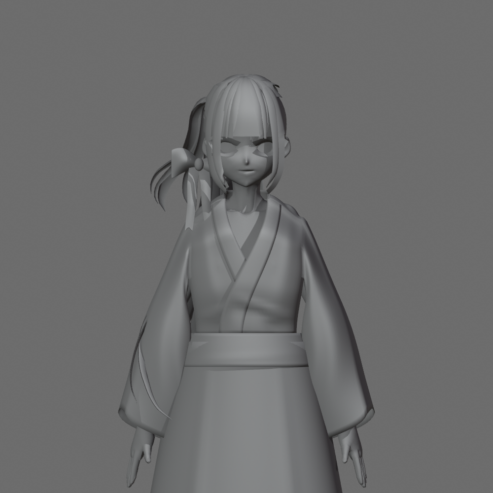

Bản dựng đầy đủ · Chưa đạt duyệt mỹ thuậtKagari: trang phục mới trên toàn bộ model
Cổ áo chồng lớp, hai tay áo rộng nối liền thân áo, đai eo và váy mới. Mặt, tóc, morph và rig gốc được giữ nguyên. Đây là bản WIP để xem trực tiếp, chưa phải avatar hoàn thiện.
Lỗi cần thấy trước khi duyệt:Mép thân áo giao nhau với đai eo ở hai bên; cổ sau còn cứng. Tóc gốc vẫn hở da đầu ở góc nghiêng và quá phẳng phía sau. Nếp rủ và biến dạng mới chỉ đạt một phần.
Ảnh màu với vật liệu sẵn có
Màu kem/burgundy dùng lại từ bản gốc. Không thêm shader, trang trí hay phụ kiện mới.

Toàn thân trước
So sánh clay cùng góc máy
Trái: Cycle 03 bị từ chối. Phải: bản tích hợp mới. Tư thế giơ tay dùng rig thông thường; không phải mô phỏng vải động.

Cycle 03
Bản tích hợp · Chính diệnConcept dùng để dựng
Ảnh Kagari hiện có trong dự án. Phần váy toàn thân và mặt sau được suy luận vì concept không thể hiện các vùng này. Chưa tái hiện đầy đủ các lớp haori và chi tiết thiết kế.

Kiểm tra đã thực hiện
Đã xem 9 ảnh clay, 4 ảnh màu và 9 ảnh clay đối chiếu. Dữ liệu bảo vệ khớp sau khi mở lại file; bốn bề mặt trang phục có weights chuẩn hóa và dùng rig gốc. Các kiểm tra đó không thay thế duyệt mỹ thuật.
Chưa kiểm tra bước đi/váy, xuất VRM hay Warudo. Bản gốc và mẫu một tay áo vẫn được lưu riêng.
full-kagari-concept-outfit-v3 · SHA256: ffbc443b2f4c1af194a77cbfdd1d4a4deb80e7b6ca1d0b1929a2dc767577fd16